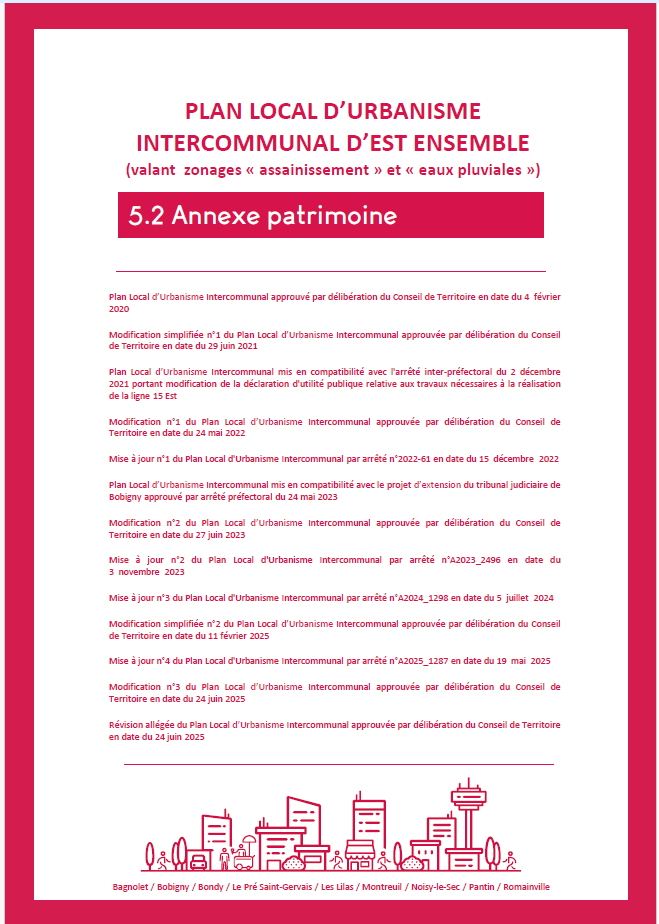
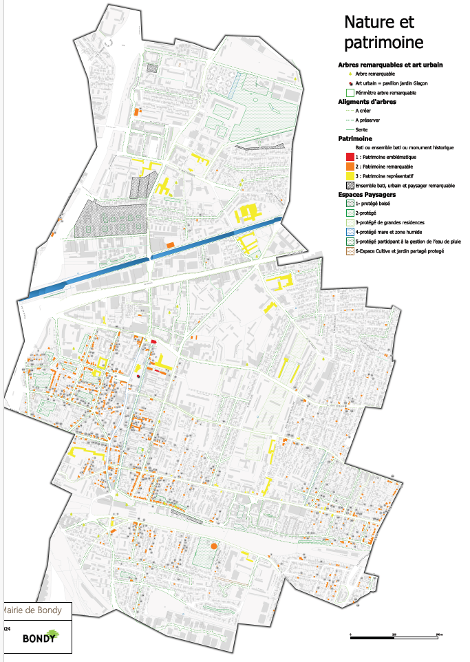

1 Différentes sources autour de la construction du PLUi
1.1 Présentation du PLUi et tableau récapitulatif des sources pour le cours

Qu’est ce que le PLUi ?
Code
data <-read.csv("data/sources.csv", fileEncoding ="UTF-8")knitr::kable(data)
type
fichier
extension
quantité
année
carte
2 couches dans patrimoine.gpkg
.gpkg
719 polygones
2025
tableau
p. 89 à 104 du 5.2 Annexe patrimoineM3
.pdf
652 points géocodés
2025
outil collaboratif
application web. Récupération .csv non géocodé
.csv
199 points géocodés
2024
matrice cadastrale
récupération année de construction à la parcelle dans la matrice cadastrale
.csv
50 112 lignes
2024
tableau
Page 9 de chacun des 3 livrets
.pdf
438 points géocodés
2020
fiche
5.2 Annexe patrimoine (Bondy-livret1).pdf
.pdf
1000 pages
2011
Code
library(sf)# extraction des couches nécessaire pour la carte 1patrimoine <-st_layers("data/patrimoine.gpkg")patrimoine <- patrimoine$namecouches <-c("cadastre","quartier","m3_prescription_surf","geocodageM3")for (c in couches){print(c) tmp <-st_read("data/patrimoine.gpkg", c)assign(c, tmp)st_write(tmp,"data/carte1.gpkg", c, delete_layer=T)}
[1] "cadastre"
Reading layer `cadastre' from data source
`C:\Users\geographie1\coursP8\data\patrimoine.gpkg' using driver `GPKG'
Simple feature collection with 7094 features and 1 field
Geometry type: MULTIPOLYGON
Dimension: XY
Bounding box: xmin: 661077.2 ymin: 6865338 xmax: 663343.6 ymax: 6869045
Projected CRS: RGF93 v1 / Lambert-93
Deleting layer `cadastre' using driver `GPKG'
Writing layer `cadastre' to data source `data/carte1.gpkg' using driver `GPKG'
Writing 7094 features with 1 fields and geometry type Multi Polygon.
[1] "quartier"
Reading layer `quartier' from data source
`C:\Users\geographie1\coursP8\data\patrimoine.gpkg' using driver `GPKG'
Simple feature collection with 5 features and 1 field
Geometry type: MULTIPOLYGON
Dimension: XY
Bounding box: xmin: 661061.2 ymin: 6865340 xmax: 663349.8 ymax: 6869044
Projected CRS: RGF93 v1 / Lambert-93
Deleting layer `quartier' using driver `GPKG'
Writing layer `quartier' to data source `data/carte1.gpkg' using driver `GPKG'
Writing 5 features with 1 fields and geometry type Multi Polygon.
[1] "m3_prescription_surf"
Reading layer `m3_prescription_surf' from data source
`C:\Users\geographie1\coursP8\data\patrimoine.gpkg' using driver `GPKG'
Simple feature collection with 799 features and 17 fields
Geometry type: MULTIPOLYGON
Dimension: XY
Bounding box: xmin: 661077.2 ymin: 6865338 xmax: 663352 ymax: 6869045
Projected CRS: RGF93 Lambert 93
Deleting layer `m3_prescription_surf' using driver `GPKG'
Writing layer `m3_prescription_surf' to data source
`data/carte1.gpkg' using driver `GPKG'
Writing 799 features with 17 fields and geometry type Multi Polygon.
[1] "geocodageM3"
Reading layer `geocodageM3' from data source
`C:\Users\geographie1\coursP8\data\patrimoine.gpkg' using driver `GPKG'
Simple feature collection with 652 features and 20 fields
Geometry type: POINT
Dimension: XY
Bounding box: xmin: 2.470726 ymin: 48.88918 xmax: 2.499813 ymax: 48.91284
Geodetic CRS: WGS 84
Deleting layer `geocodageM3' using driver `GPKG'
Writing layer `geocodageM3' to data source `data/carte1.gpkg' using driver `GPKG'
Writing 652 features with 20 fields and geometry type Point.
Code
st_layers("data/carte1.gpkg")
Driver: GPKG
Available layers:
layer_name geometry_type features fields crs_name
1 cadastre Multi Polygon 7094 1 RGF93 v1 / Lambert-93
2 quartier Multi Polygon 5 1 RGF93 v1 / Lambert-93
3 m3_prescription_surf Multi Polygon 799 17 RGF93 Lambert 93
4 geocodageM3 Point 652 20 WGS 84
1.2 Le plan du patrimoine issu du PLUi

extraction du plan patrimoine PLUi M3
Toutes les données cartographiques et réglementaires sont en opendata sur le GPU !
Code
flowchart LR A[GPU \nprescriptions surf ] --> B(patrimoinePlui) B --> C{Distinguer\ntypes} C --> D[bâtiments niveau 1 à 3] C --> E[zones]
flowchart LR
A[GPU \nprescriptions surf ] --> B(patrimoinePlui)
B --> C{Distinguer\ntypes}
C --> D[bâtiments niveau 1 à 3]
C --> E[zones]
1.3 Les tableaux
Dans le document réglementaire de type .pdf Le document étant opposable, il a fallu ocr-iser les listes
Qui connait Qgis ? quel niveau ? (remplir le framapad) => définir des étudiants ressource
3 Méthode et déroulé
3.1 Le cercle vertueux
Il s’agit de mettre en place un cercle vertueux dans l’utilisation d’OSM : extraire, contribuer, vérifier sa saisie en extrayant de nouveau et contribuer pour l’améliorer.
3.2 Déroulé
JOUR 1 : Analyser les données à intégrer dans OSM à partir des sources M3
JOUR 2 : Faire une première session de saisie dans OSM
JOUR 3 : Extraire, faire un atlas sous QGIS bâtiment par bâtiment, utiliser les sources M2 pour faire une deuxième sessions et produire un atlas plus complexe
Au niveau du temps, cela donne :
Code
# stats temps / séquencetemps <-read.csv("data/tps.csv")sum(temps$temps, na.rm=TRUE)
[1] 1040
40 mn de moins… le temps des pauses… 15 mn toutes les 1 H 30, on sera un peu court.
Voir également heures de repas et 1er jour
3.3 Evaluation
Important
pas d’évaluation officielle
3.3.1 Deux quizz
notions de base puis plusieurs cartes que nous regarderons rapidement
CARTE 1 : compétences de base QGIS, affichage de la donnée Patrimoine du PLUi M3
CARTE 2 : une anomalie rencontrée sur la donnée
CARTE 3 : connaître sa donnée sur sa zone
CARTE 4 : vérif de la 1e saisie et atlas (1 carte et un tableau)
CARTE 5 : vérif de la 2e saisie et atlas plus complexe (plusieurs cartes et un tableau)
3.3.3 Evaluer la saisie OSM
3.3.3.1 Quantité
Pour la saisie OSM, chaque étudiant notera le nombre de saisies faites
3.3.3.2 Qualité
Concernant la qualité de la saisie, éviter absolument le retour de bâton OSM, notamment pour il y a deux ans.
Donc, impérativement mettre dans le commentaire de changeset : #Paris8-Bondy2025
Egalement, examiner les contributions dans le détail avec les outils de contrôle de qualité d’OSM : chez neis
3.4 Le collaboratif
Un mot au sujet du collectif, ce cours est aussi l’occasion de tester une organisation de travail en groupe (c’est la raison d’être d’OSM) donc répartition des étudiants cluster de points.
3.5 Précisions techniques
3.5.1 Support et procédures
Le support, fait sous R Quarto, sert uniquement de “fil rouge”.
Les procédures employées sous QGIS / JOSM sont résumées sur un support papier distribué.
Utilisation d’internet, exemple :
“Qgis compter les points dans un polygone” Quel est le menu qui permet de le faire ?
3.5.2 Projet git
En utilisant l’icone à droite du cours, copie du projet GIT en début et en fin de session (via l’option download zip)
3.5.3 Les données
Directement sur le git ou sur le partage réseau au fur et à mesure.
Partage réseau, au niveau de la zone de recherche, taper
\\C210-P
Sélectionner ensuite le répertoire partage géographie et OSM, clic droit Ajouter un raccourci rapide
3.5.4 Dépôt des cartes
Le dépôt des cartes se fera sur le partage réseau.
Déposer sa carte dans le répertoire img/cartes avec comme syntaxe : prenom.png
4 Présentation en binôme
passé / présent / futur / attentes par rapport OSM / niveau QGIS fichier framapad, celui qui parle, celui qui écrit
Ce fichier va permettre de s’attribuer les zones de saisie et toutes les opérations collaboratives du cours.
Code
data <-read.csv("data/etudiant.csv")table(data$passé.lieu)par(mar =c(12,2,2,2))barplot(table(data$passé.lieu), las =2)barplot(table(data$passé.thème), las =2)barplot(table(data$présent), las =2)barplot(table(data$futur), las =2)